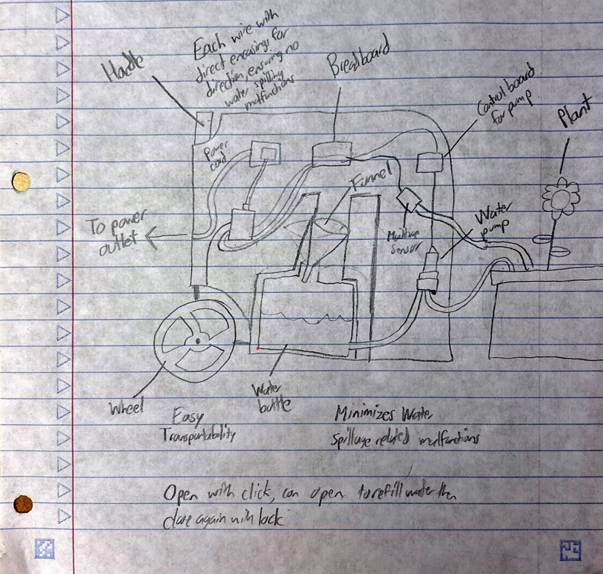
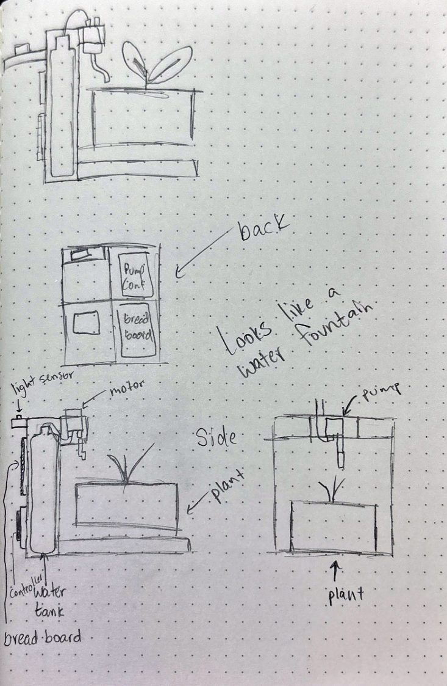
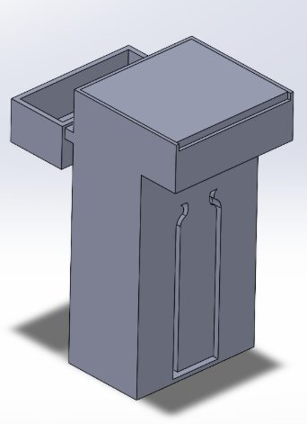
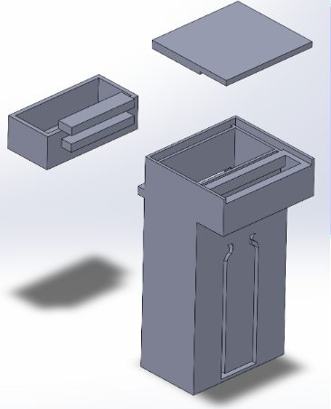
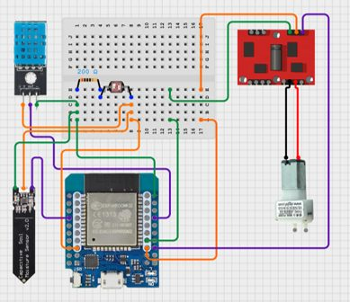
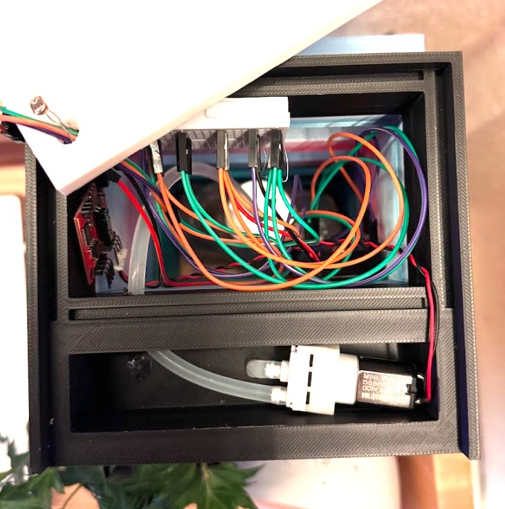
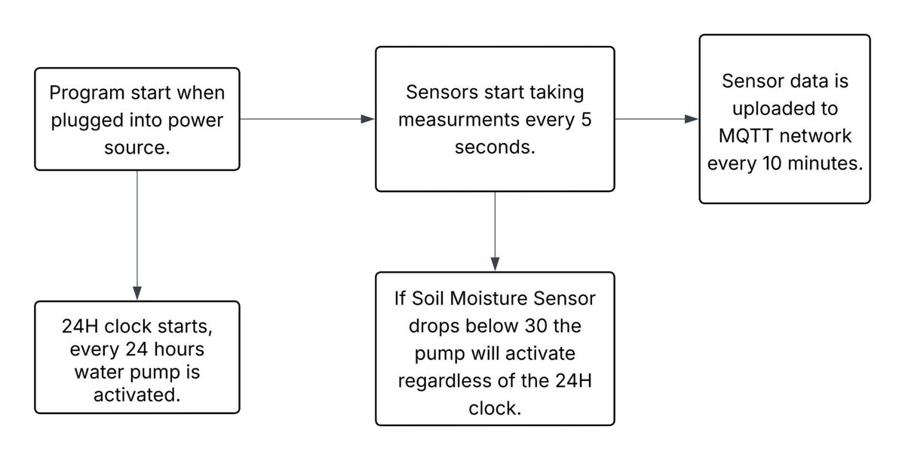
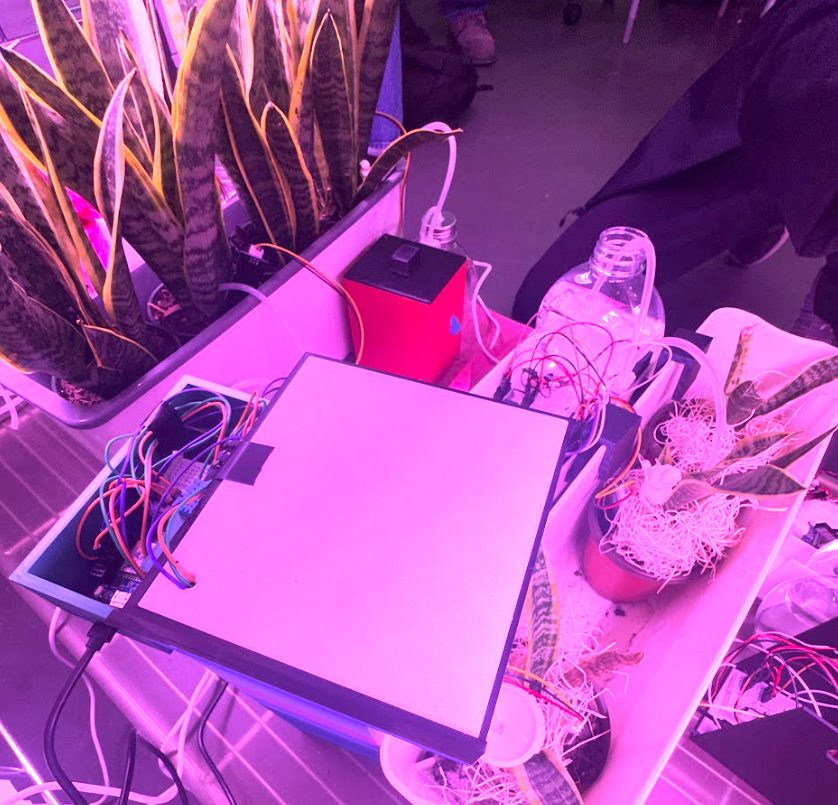
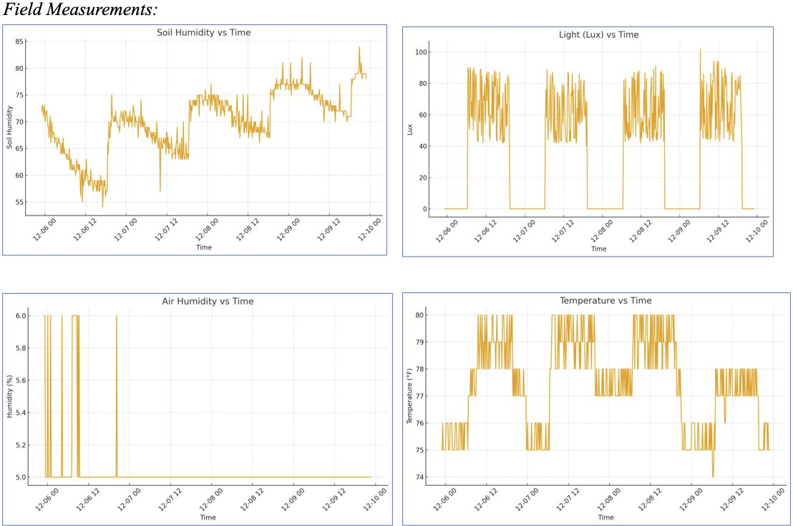

The challenge
Design a device that keeps a plant alive without human help. It had to fit in 5 x 5 x 10 inches, print in under eight hours on one printer, and deliver 20 mL of water each time the plant needed it.
The pump had to run every 24 hours and any time soil moisture fell below 30%. The device also had to run for five days, three of them in a row, and publish its readings over Wi-Fi to the Stevens MQTT server.
Concepts
We sketched three concepts: a portable case on wheels, a platform assembled with joints, and a compact box that keeps wires out of the way. The final design took the openable case from the first, the joints from the second, and the wire separation from the third. It was styled to look like a campus water-bottle fountain.


Mechanical design
Kosta modeled the housing in SolidWorks. The design started with three parts: main body, electronics box and lid. The electronics box pushed the depth past the size limit, so we removed the box and the floor of the body. That let the electronics sit just under the lid, cut print time and brought all three dimensions inside the limits late in the project.
A cutout on the front shows the water level in the bottle inside, and the pump dispenses from the same spot a real fountain would.


Electrical design
The circuit runs on an ESP32. A capacitive sensor reads soil moisture, a DHT sensor reads air temperature and humidity, and a photocell reads light. A motor control board drives the pump.
I rewired the system to work more efficiently. Each sensor gets its own breadboard lane, and the wires are color coded: orange for power, green for ground and purple for data. In the final build I extended the photocell with jumper wires so it could sit outside the housing.


Software
The Arduino code reads the sensors every 5 seconds, publishes to MQTT every 10 minutes and runs the pump for 8 seconds every 24 hours. It also runs the pump whenever soil moisture drops below 30%.
The 24-hour timer uses millis() instead of delay(), because delay() can block the program and interrupt MQTT uploads.

Assembly and testing
Early prints failed on the large overhang, so we reprinted several parts. The tested version had a separate electronics box, which broke the size limit, so the final build moved everything inside the main body.
Deployment ran from December 5 to 10. Data did not upload on the first day because the network was overloaded with student projects, not because of the code. Redeploying a few hours later fixed it, and the system then ran for five days.

Results
Soil moisture jumped every 24 hours, when the pump ran, then dried out slowly until the next watering. That confirmed the sensor calibration, wiring and code all worked. The light readings showed the room lights going off each night, which confirmed the photocell.

What we learned
None of us had coding experience going in, so coding was our biggest area of growth. We also learned that we should have managed time better: we deployed on the last possible day, and ran out of filament on some prints, which is why the final body is multicolored.